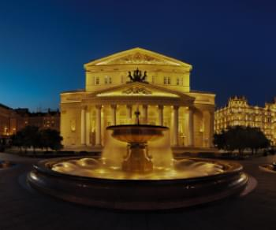

<section class="about">
    <div class="wrap">
        <div class="about__body">
            <div class="title">
                <h2><span class="gold__text">О</span> театре</h2>
            </div>
            <div class="about__content about-content">
                <div class="about-content__left">
                    <h4 class="about-content__title">Самый лучший театр спб</h4>
                    <p class="about-content__text">
                        Как свидетельствуют архивные документы, первое каменное здание Большого театра начали возводить
                        в 1775 году по проекту Антонио Ринальди. В дальнейшем, после того как Ринальди упал с лесов и не
                        мог лично наблюдать за ходом работ, Екатерина II поручила немецкому театральному декоратору и
                        архитектору Людвигу Филиппу Тишбейну создать новый проект театра, который и был воплощён
                        архитекторами Ф. В. фон Бауром и М. А. Деденёвым. Открытие его состоялось в 1783 году, хотя,
                        основываясь на других свидетельствах, годом открытия можно считать 1784 год.
                    </p>
                </div>
                <div class="about-content__center">
                    <h4 class="about-content__title">Немного о цифрах</h4>
                    <div class="about-content__box content__box-top">
                        <picture><source srcset="img/about/armchair.svg" type="image/webp"></picture>
                        <p><span class="gold__text">1600</span> посадочных мест</p>
                    </div>
                    <div class="about-content__box content__box-bottom">
                        <picture><source srcset="img/about/theater.svg" type="image/webp"></picture>
                        <p><span class="gold__text">250</span> лет историй</p>
                    </div>
                </div>
                <div class="about-content__right">
                    <picture><source srcset="img/about/aboutTheatre.webp" type="image/webp"></picture>
                </div>
            </div>
        </div>
    </div>
</section>